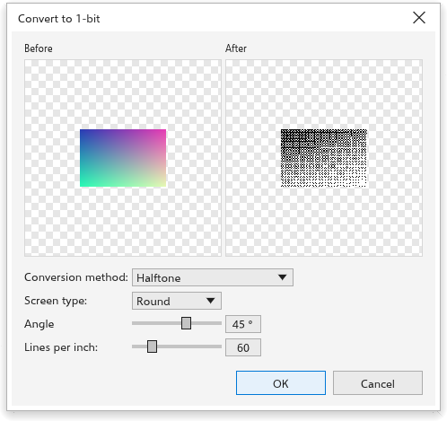
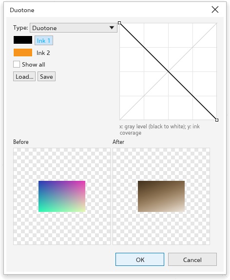

變更點陣圖的色彩模式
點陣圖 > 模式 會將選取的點陣圖轉換為其他色彩模式。所有選取的點陣圖會在一個復原步驟中變更，並保留透明度。有設定的模式會開啟一個對話方塊，其中有轉換前和轉換後的預覽。
| 模式 | 結果 |
|---|---|
| 黑白 (1 位元) | 只有黑和白（請參閱下文） |
| 灰階 (8 位元) | 灰色色階 |
| 雙色調 (8 位元) | 一到四種油墨（請參閱下文） |
| 調色盤 (8 位元) | 最多 256 種色彩（請參閱下文） |
| RGB 色彩 (24 位元) | 像素保持原樣 |
| Lab 色彩 (24 位元) | Lab 色彩 |
| CMYK 色彩 (32 位元) | 像素保持原樣；色彩管理會在輸出時轉換 |
黑白

選擇轉換方法：
- 線條藝術：灰階值等於或高於臨界值（預設為 128）處為白色，其他地方為黑色；
- 有序：規則排列的網點圖樣；
- 半色調（預設）：以某個角度（45 度）和每英吋若干線數（60）排列的圓形、線條或方形網點網屏；
- 基數分佈：看似隨機的紋理；
- Jarvis、Stucki 和 Floyd-Steinberg：誤差擴散，對相片能產生最平滑的結果。
強度（0 到 100，預設為 50）會讓結果變亮或變暗。
雙色調

雙色調以少數幾種油墨印刷灰階圖片，只用少量色彩就能呈現豐富的色調。
- 選擇類型：單色調、雙色調（預設）、三色調或四色調，分別對應一到四種油墨。
- 按一下油墨以變更其色彩。
- 編輯其曲線：橫向是灰階等級（黑色在左側），縱向是該油墨的印刷量。在空白處拖曳可新增點，拖曳點可移動它，按兩下點或將其拖出格線則可移除。全部顯示也會繪製其他油墨的曲線。
- 儲存和載入會將油墨和曲線保存在檔案中。
調色盤式

- 調色盤：均勻色彩、標準 VGA（16 色）、自適應和最佳化（圖片本身的色彩，減少到您設定的色彩數量，最多 256 種）、灰階、系統或自訂（文件調色盤）。
- 混色：無、有序、Jarvis、Stucki 或 Floyd-Steinberg，並可設定混色強度。
產生的調色盤會顯示在設定下方。
為黑白點陣圖上色
只選取雙色點陣圖時，按一下調色盤色彩可為其背景上色，以右鍵按一下則可為其前景上色。